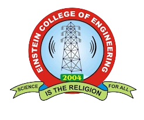

|  | EINSTEIN COLLEGEOF ENGINEERING Science is the Religion for All |
The Einstein College of Engineering Tirunelveli Admissions for the year 2024 - 2025 has opened. The candidates can apply by visiting the official website of the college.
The Einstein College of Engineering Tirunelveli is organising the Intra-college annual sports meet from 23 - 25th February 2024.
The Einstein College of Engineering Tirunelveli was founded in 2004 to provide higher education to students in the field of Engineering. The Einstein College of Engineering Tirunelveli courses are offered to students at the undergraduate and postgraduate levels. The Einstein College of Engineering Tirunelveli UG course offers B.E programmes.
We Are Making a Einsteinium 2k24 Symposium Website
Developed by
G.Parvathy
M.Praveena
S.Sobika
B.Swetha